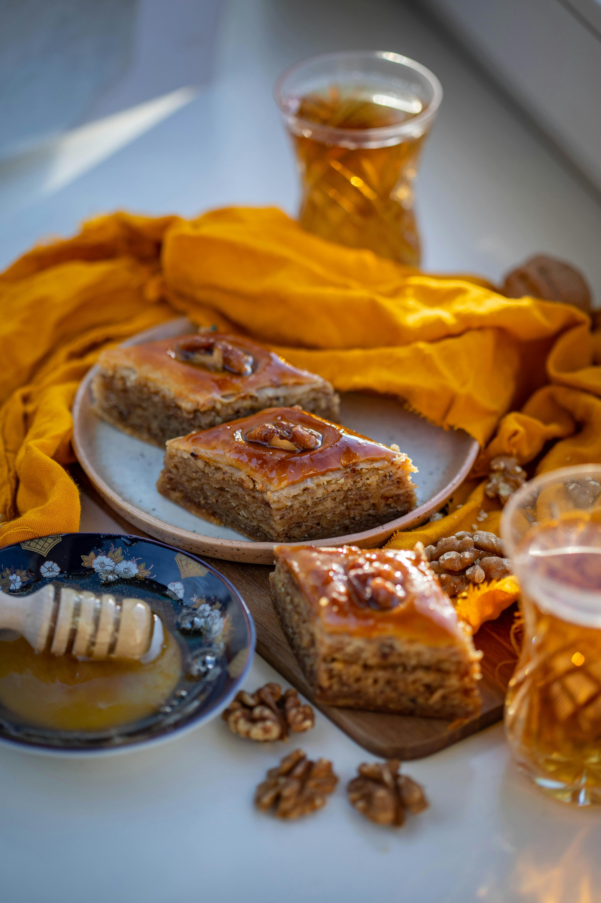

Baklava Tarifi

İçindekiler:
- 2 Paket Yufka
- 200g Ceviz İçi
- 150g Tereyağı
- 1 Su Bardağı Zeytinyağı
- 1 Su Bardağı Su
- 1 Su Bardağı Toz Şeker
- 1 Çay Kaşığı Limon Suyu
Yapılışı:
- İlk olarak tatlımızın şerbetini hazırlayalım. Bunun için uygun bir tencereye şeker ve suyu alalım.
- Karıştırdıktan sonra şerbetimizi kaynamaya bırakalım.
- Sürenin sonunda limon suyunu da ilave ederek bir kaç dakika daha kaynatalım ve ocaktan alalım.
- Baklava hamuru için yoğurma kabına yumurta, sıvı yağ, süt, sirke ve tuzu alarak karıştıralım.
- Daha sonra unu yavaş yavaş ilave ederek hamurumuzu ele yapışmayan bir kıvam alıncaya kadar yoğuralım.
- Yoğurduğumuz hamurumuzun üzerini streçleyerek 30 dakika kadar dinlenmeye bırakalım. Bu şekilde hamurumuz çok daha kolay açılacaktır.
- Süre sonunda hamurumuzu tezgaha alalım ve bir iki kere daha yoğurarak toparlayalım.
- Hamurumuzu ilk önce eşit bir şekilde 3 parçaya ayıralım, daha sonra her parçayı da 9 parçaya ayıralım.
- Böldüğümüz parçaları dıştan içe doğru yoğurup, elimizde yuvarlayarak beze haline getirelim. Toplamda 27 adet beze elde etmiş olacağız.
- Tüm parçaları beze haline getirdikten sonra üzerlerini streç filmle kapatalım. Böylece hamur açma işlemi bitene kadar kurumalarını engellemiş olacağız.
- Bezelerimizinden bir tanesini nişasta serptiğimiz tezgaha alalım, merdane yardımı ile tatlı tabağı boyutunda açalım. Bu şekilde ilk 9 bezeyi tek tek açalım, aralarına nişasta serperek üst üste yerleştirelim.
- Daha sonra hazırladığımız 9 kat hamuru tepsi boyutundan biraz büyük olacak şekilde arada bir ters-yüz ederek açalım. Burada hamuru ters yüz ettiğinizde altta kalan küçük katlarda eşit oranda genişleyecektir.
- Daha sonra hamuru yine dikkatli bir şekilde, nazikçe katlarına ayıralım.
- Elde ettiğimiz incecik, zar gibi baklava hamurunu tepsimize yerleştirelim. Dilerseniz benim gibi yufkaları ayırarak koyabileceğiniz gibi ayırmadan bütün bir şekilde de koyabilirsiniz.
- İlk 9 katı tepsiye yerleştirdikten sonra üzerine ceviz kırıkları serpiştirelim. Dilerseniz bu aşamada fındık veya fıstıkta koyabilirsiniz.
- Diğer 9 bezeyı de aynı şekilde açarak, aralarına nişasta serpelim ve üst üste yerleştirelim. Ardından tepsi boyutunda genişletelim.
- Genişlettiğimiz hamuru tekrar katlarına ayırarak tepsimize yerleştirelim.Eğer siz de katları tek tek yerleştirecekseniz ve yeriniz de müsaitse, hamurları kurumaları için bir yere serip, 3-4 dakika bekletebilirsiniz.
- Tepsiye yerleştirdiğimiz hamurların üzerine ceviz kırığı serpelim.
- Son 9 bezemizi de aynı işlemleri uygulayarak tepsi boyutunda genişletelim ve tepsimize yerleştirelim.
- Baklavamızı keserken ilk önce 4 parçaya keselim. Daha sonra bu 4 parçayı da küçük üçgenlere ayıralım.
- Son olarak eritilmiş tereyağı ve sıvı yağ karışımını baklavamızın üzerine gezdirelim ve önceden ısıttığımız 170°C fırında 1 saat kadar pişmeye bırakalım.
- Süre sonunda fırından aldığımız sıcak baklavaların üzerine soğuyan şerbetimizi gezdirelim ve şerbetini çekmesi için dinlenmeye bırakalım. Deneyeceklere şimdiden afiyet olsun.
Geri Dön
 Tatlı Keşif
Tatlı Keşif

User9383764 (23 eylül 2024 23:44):
güzel.
tatlıcanavarı.com (25 Ocak 2024 09:26):
sürekli bu siteden tarif alıyorum. hepsi inanılmaz. ellerinize sağlık.
nezihadere (3 haziran 2024 15:38):
bayramda torunlara yapmıştım. parmaklarını yediler.
muratgnc (21 mart 2024 21:21):
inanılmaz bir lezzet.